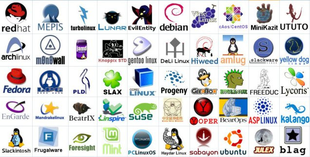

Linux foi criado em 1991 por Linus Torvalds, um estudante finlandês de 21 anos.
Torvalds foi inspirado pelo sistema operacional Unix e queria criar um sistema operacional gratuito e de código aberto.

Em 1992, a versão 1.0 do Linux foi lançada e desde então o sistema operacional tem sido continuamente desenvolvido e melhorado por uma comunidade global de desenvolvedores.

O código-fonte do Linux é livremente disponível para que qualquer pessoa possa ver, modificar e distribuir.

Linux é gratuito para uso pessoal e comercial.
Linux pode ser personalizado para atender às necessidades específicas de cada usuário.

Linux é considerado um sistema operacional seguro devido à sua arquitetura de código aberto e à constante revisão e atualização do código.

Existem centenas de distribuições do Linux, cada uma com suas próprias características e objetivos.

Ubuntu, Fedora, CentOS, Debian, Slackware, etc.
As distribuições do Linux são mantidas por comunidades de desenvolvedores e usuários que trabalham juntos para melhorar e atualizar o sistema operacional.